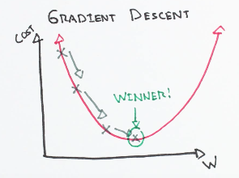

Machine Learning
Contents
Machine Learning#
Clicking on a question in the list below will take you to the solution, clicking on the question header will bring you back to this list of questions.
Contributing Have ideas for more questions? See the contributing section.
Questions
-
What are eigenvectors and eigenvalues? What are some properties of these?
What is an eigendecomposition? What is singular value decomposition (SVD)? How do they relate?
What are overfitting and underfitting? How do they relate to bias and variance?
What is k-fold cross validation? What about leave-one-out (LOO) cross validation?
What is Principal Component Analysis (PCA). What are its uses? TODO
Define precision and recall. How do they relate to an \(F_1\) score?
What is the sigmoid function? What are some properties it has? TODO
-
Explain batch vs stochastic gradient descent. What are the trade-offs? TODO
Explain the Bias-Variance tradeoff. Use an equation and explain to non-technical audiences. TODO
Explain random forests. What are their tradeoffs compared to decision trees? TODO
What is the difference between a generative and discriminative model? Give an example of each. TODO
How is k-Nearest Neighbors different from k-means clustering? TODO
What type of cross validation would you use on time series data? TODO
Warm-Ups#
What are eigenvectors and eigenvalues? What are some properties of these?#
For a matrix \(A\), an eigenvector \(v\) is a nonzero vector such that \(Av = \lambda v\) for some constant \(\lambda\). The constant \(\lambda\) is the corresponding eigenvalue. Note that \(\lambda\) can be zero.
If \(v,\lambda\) is an eigenvector/value pair for a matrix \(A\), then \(v,\lambda^k\) is an eigenvector/eigenvalue pair for \(A^k\) for all \(k\geq 0\). If \(A\) is invertible, this also holds for \(k\leq 0\), so in particular \(v,\tfrac{1}{\lambda}\) is an eigenvector/value pair for \(A^{-1}\).
What is an eigendecomposition? What is singular value decomposition (SVD)? How do they relate?#
Spectral Theorem If \(A\) is a symmetric real matrix, then \(A=Q\Lambda Q^\top\) for some orthogonal matrix \(Q\) (meaning \(Q\) is symmetric and \(Q^\top Q = QQ^\top=I\)) and diagonal matrix \(\Lambda = \text{diag}(\lambda_1,\ldots, \lambda_n)\). This is the eigendecomposition. (this is unique only when all eigenvalues are distinct)
Singular Value Decomposition Every real matrix \(A\) (\(m\times n\)) has a decomposition \(A=U\Sigma V^\top\) where \(U\in \mathbb{R}^{m\times m}\), \(V\in \mathbb{R}^{n\times n}\) and \(\Sigma\in \mathbb{R}^{m\times n}\) is diagonal with the singular values of \(A\) along the diagonal. The singular values are the eigenvalues of \(A^\top A\) and \(AA^\top\).
When \(A\) is symmetric, the eigendecomposition is a valid singular value decomposition. Note, however, that SVD is not unique as we can always reorder vectors or scale \(U,V\).
What is the bias of a model? What is its variance? TODO#
What are overfitting and underfitting? How do they relate to bias and variance?#
Overfitting is when a model learns the randomness of the training set, not just its underlying structure. This leads to high training accuracy and low validation accuracy or poor generalization.
Underfitting is when a model is not complex enough to learn the relationships in the data. For example, fitting a linear model to a quadratic dataset. This leads to poor performance on both training and validation accuracy.
Underfitting has high bias but lower variance, whereas overfitting tends to have low bias, but high variance.
Explain gradient descent.#
Often in machine learning we want to optimize by finding a minimum (or maximum) of a given cost function. For example we may train a model and learn the weights that minimize some loss function on the training data. Gradient descent is an optimization tool for iteratively finding the minimizing values for a function.
Requirement: the function must be differentiable.
Suppose we have a function \(L(x)\) and we want to solve for the \(\hat{x}\) that minimizes \(L\). We start at some initial point, \(x_0\). Taking the derivative (or gradient) of \(L\) at \(x_0\) we can then correct \(x_0\) using this derivative and some learning rate \(\varepsilon\) to get \(x_1 = x_0 -\varepsilon \nabla_L(x_0)\). If we reach a local minima, then this iteration will be stationary, so we repeat this correction until we converge to \(\hat{x}\).

If \(L\) is not convex this may be only a local minima, and not the global minima. However if \(L\) is convex, then the local minima will be global minima as well. Caution: If the function asymptotically decreases then the global optima may be at infinity.
What is regularization? What are some examples? TODO#
What is a training/validation split? Why do we use them?#
Most models require training on some data to determine optimal weights. In this case, models are fit to perform well on the training data, so their accuracy must be determined on new data that has not been seen before, but that we have labels for so we can measure accuracy. Thus when training and scoring a model, we will split our labeled data into training and validation data, use the former to train the model and the latter to assess how well the model generalizes to new data.
In the case where we want to tune a hyperparameter of a model, which will require training the model and scoring it repeatedly, our choice of hyperparameter will similarly be selected for its performance on the validation set. Thus we need a third set, the test dataset, to evaluate our final model’s accuracy.
As a general principal, the test data should be extracted at the start and set aside. Then it is only used when a model is totally finished to report the generalization accuracy of the model. If further model tuning is done, ideally new testing data would be collected.
What is k-fold cross validation? What about leave-one-out (LOO) cross validation?#
\(k\)-fold cross validation is a method of splitting data for training/validation of a model. Given a number \(k\), we split the data into \(k\) groups (these can be stratified by class or randomly assigned). Then for each of the \(k\) groups, we generate a split where this group is the validation data and the other \(k-1\) groups are combined into the training data. The model is then trained (using the \(k-1\) groups) and scored (using the remaining \(k\)th group) for each split, and the average accuracy is reported. One advantage to this method is that every data point is used as both training and validation over the course of the model evaluation.
Leave-one-out cross validation is a version of \(k\)-fold CV where \(k\) is the size of the dataset, so that the validation group for each split is a single sample.
What is bootstrapping? What is bagging? TODO#
For each of the following models, explain them and mention their assumptions and hyperparameters: linear regression, logistic regression, RIDGE and LASSO regression, hard and soft margin SVM, decision trees, random forests, naive Bayes, k-nearest neighbor. TODO#
What is Principal Component Analysis (PCA). What are its uses? TODO#
What is the difference between supervised and unsupervised learning? Give some examples of each. TODO#
Define precision and recall. How do they relate to an \(F_1\) score?#
Precision, Recall, and their single combined metric \(F_1\) are measures of model accuracy for rare class classification.
Let \(TP/TN\) be True Positives/Negatives, \(FP/FN\) be False Positives/Negatives.
Precision is the number of positives predicted that are correct, that is \(\frac{TP}{TP+FP}\).
Recall is the number of true positives identified as such by the model, i.e. \(\frac{TP}{TP+FN}\).
For a single combined metric, we have the \(F_1\) score, \(F_1 = \frac{Precision \times Recall}{Precision + Recall}\).